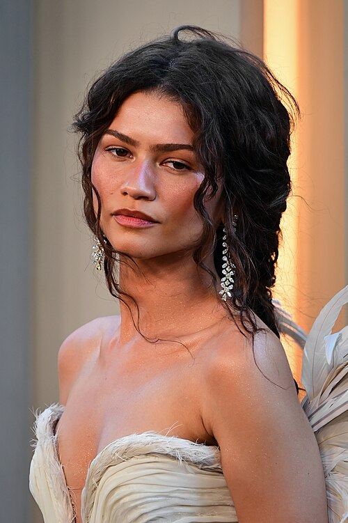

Pick a personality.
Choose an actor and place them on both scales. Big personality doesn’t have to mean bad acting.
SAME PERSONA. DIFFERENT MOVIE.
Some actors disappear into a role.
These actors bring themselves.
From low-key to full Cage, put their screen personalities on the map. Then make your case.
No actors match. Try another name or filter.

Starter positions are opinions to get the debate going. Axis portraits indicate personality only.
EVERY PLACEMENT IS AN ARGUMENT.
Choose an actor and place them on both scales. Big personality doesn’t have to mean bad acting.
Two approvals put a position on the map. Alternatives start with their own votes. This is a friendly debate, not a formal election.
Bring a film, a scene, or a very good argument. Propose a move if the placement feels off.